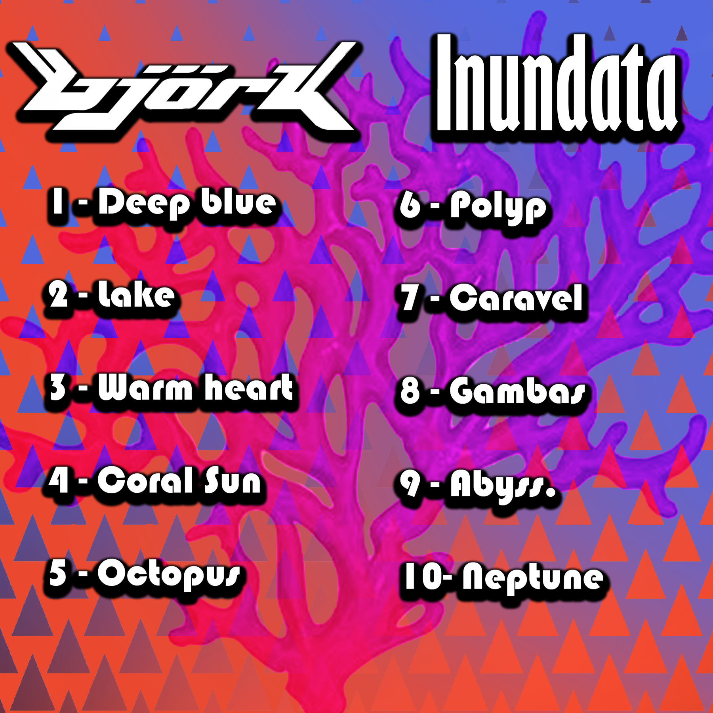
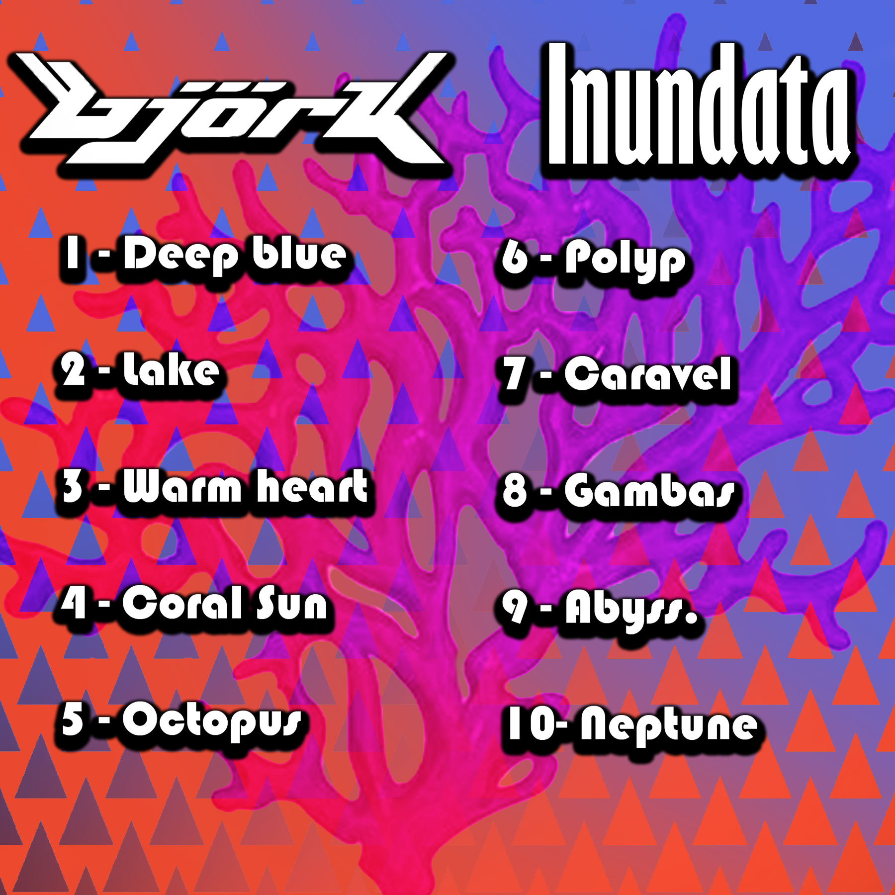

Projet 1 - Création et design d'une pochette d'album
 

L'un des premiers projets que j'ai fait au de ce premier semestre a été la création d'une pochètte pour un album fictif, liés à un artiste que j'ai dus choisir dans une liste donnée par l'école. Et donc j'ai décidé de chosir Björk, une chanteuse islandaise avec un style bien à elle, j'ai dus pas mal réfléchir à comment créer une pochette original mais qui reste tout de même dans son style, ce qui n'à pas été mince affaire.
En étudiant le style de Björk, j’ai pus observé qu’on retrouvais un côté très organique et coloré sur plusieurs de plusieurs de ses couverture d’album, le mariage entre ses formes insolites et ses couleurs vives m’ont fait pensé à la barrière de corail, d’où la raison de pourquoi je suis partie sur un aspect aquatique. De plus ses musiques portes surtout sur l’amour et justement l’iconographie marine se marie très bien avec l’amour car l’amour peux être synonyme de vie et de beauté, mais il peut aussi se montré aussi mystérieux étouffant et voir même terrifiant.